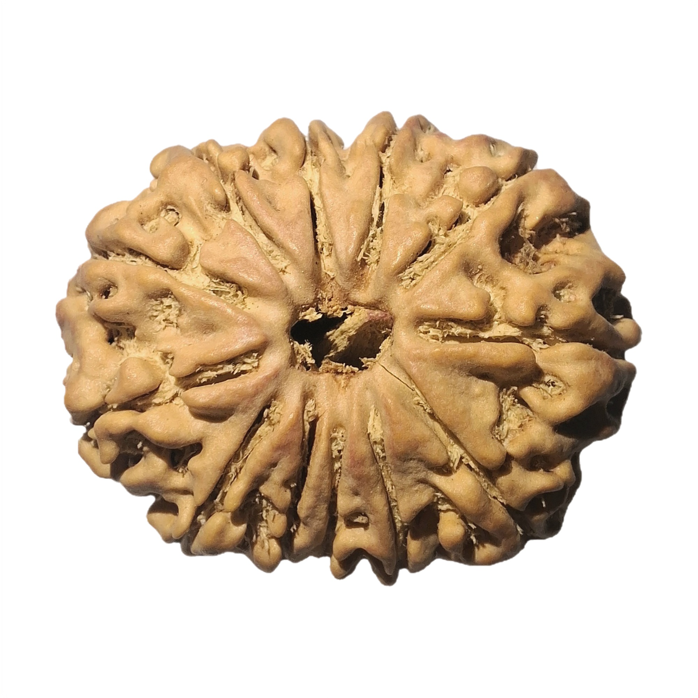
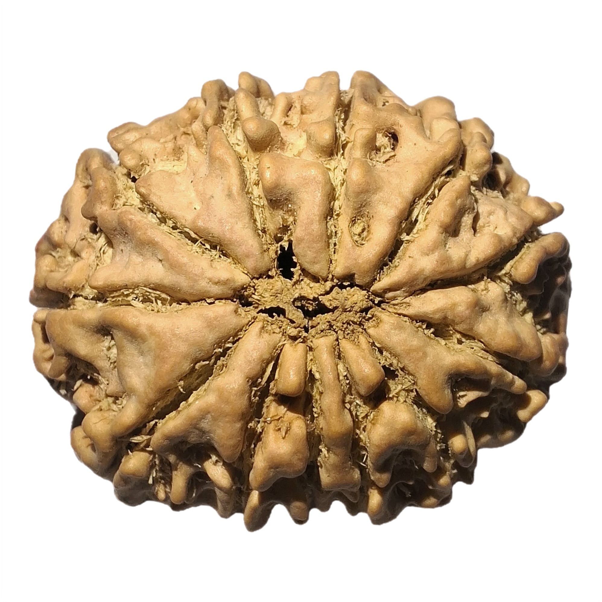

Photographic Evidence

Front View · 12 Mukhi · Natural Surface

Back View · Natural Lines · Unaltered
Bead Specifications
Certificate No.
026-N12-002
Dimensions (mm)
27.3 × 22.4 × 17.1
Nepal Rudraksha Lab • Gemological Observation
Under high-magnification analysis, the bead exhibits 12 distinct, naturally formed mukhi lines with no evidence of artificial scoring or chemical treatment. Surface texture and internal structure are consistent with authentic Elaeocarpus ganitrus origin. No synthetic resin, pigment dyes, or tampering detected.
Certified Genuine — All authenticity protocols passed. Twelve Mukhi Rudraksha confirmed by gemological analysis.
Nepal Rudraksha Lab Guarantee:
If this Rudraksha bead is proven artificial, duplicate, or non-genuine, full refund eligibility is granted upon verification. Our lab stands behind every certified bead with lifetime authenticity assurance.